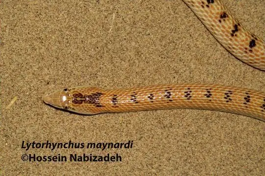
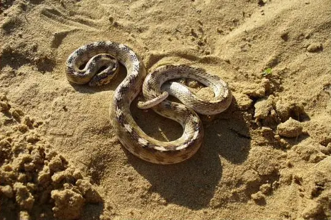

Lytorhynchus
The genus Lytorhynchus (family Colubridae) has 6 species in SnakeList (none venomous), recorded in 24 countries.
- 6species
- 6non-venomous
- 24countries
Species
Showing 6 species
 Awl-headed SnakeLytorhynchus diadema
Awl-headed SnakeLytorhynchus diadema Derafshi SnakeLytorhynchus ridgewayi
Derafshi SnakeLytorhynchus ridgewayi- No photo yetKennedy's Leafnose SnakeLytorhynchus kennedyi
- No photo yetLeviton's Leafnose SnakeLytorhynchus gasperetti

Maynard's Longnose Sand SnakeLytorhynchus maynardi
Sindh Awl-headed SnakeLytorhynchus paradoxus
No snakes in Lytorhynchus match.
About the genus Lytorhynchus
- Family: Colubridae.
- Recorded in: Afghanistan, Algeria, Chad, Egypt, India, Iran, Iraq, Israel, Jordan, Kuwait, Libya, Mauritania, Morocco, Niger, Oman, Pakistan, Qatar, Saudi Arabia, Sudan, Syria, Tunisia, Turkmenistan, United Arab Emirates, Uzbekistan.